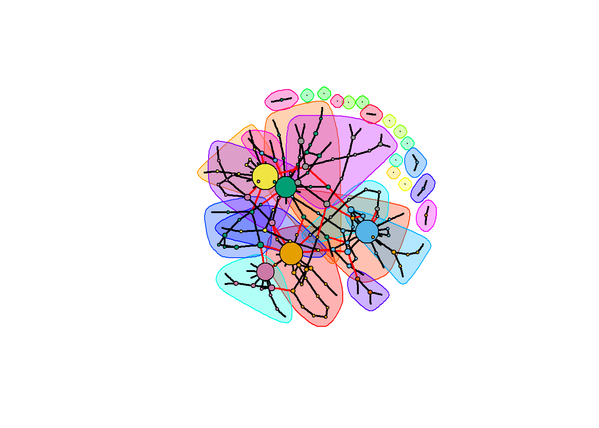

This vignette helps users with the network fitting function spacemap and its output.
The spaceMap model is a conditional graphical model for learning networks with two-types of nodes. Two distinct data (node) types are input to the model: One labeled as \(x\)’s (predictor variables) that can be continuous, discrete, or categorical; another labeled as \(y\)’s that are continuous response variables. The output is a network containing \(x-y\) and \(y-y\) edges, but not \(x-x\) edges.
spaceMap has been used to identify which genomic alterations (\(x\)) disrupt which protein (\(y\)) pathways, while simultaneously accounting for the interactions among the proteins in the [bcpls application] (https://topherconley.github.io/neta-bcpls/). The model may also be applied to other high dimensional data types and to applications beyond integrative genomics.
We use simulation data sim1 to illustrate how to fit the spaceMap model. sim1 contains \(N=150\) i.i.d. samples of \(P=14\) predictor variables (\(x\)) and \(Q=171\) response variables (\(y\)) generated under a Gaussian Graphical Model. The corresponding network has 4 prominent \(x\)-hubs perturbing ~13 \(y\) variables, and two prominent \(y\)-hubs. More details of this simulation can be found in the sim1 documentation.
We load the sim1 R object, containing the \(N\times Q\) response matrix \(\bf Y\), the \(N\times P\) response matrix \(\bf X\), and the true network.
library(spacemap)
data(sim1)The following steps will discuss input parameters and model output.
spacemap
Tuning parameters \(\lambda_1, \lambda_2\) (corresponding to the arguments lam1 and lam2) control the overall sparsity of the \(y-y\) and \(x-y\) edges in the network, respectively. Tuning parameter \(\lambda_3\) (corresponding to argument lam3) encourages selection of \(x\) hubs– \(x\) that influences many \(y\)’s.
The selection of tuning parameters through cross-validation is discussed in another vignette. Here, we set the tuning parameters based on previous cross validation results.
lam1 <- 72
lam2 <- 29
lam3 <- 18All other input parameters are left as defaults, but can be further customized as needed (see help(spacemap::spacemap)).
net <- spacemap(Y = sim1$Y, X = sim1$X, lam1 = lam1, lam2 = lam2, lam3 = lam3)The network topology is encoded in the adjacency matrices yy and xy from the output of the adjacency auxiliary function.
adjnet <- adjacency(net = net)
str(adjnet)## List of 2
## $ yy: int [1:171, 1:171] 0 0 0 0 0 0 0 0 0 0 ...
## $ xy: int [1:14, 1:171] 1 0 0 0 0 0 0 0 0 0 ...where
adjnet$yy[q,l] indicates an edge \(y_q - y_l\) when equal to 1.adjnet$xy[p,q] indicates an edge \(x_p - y_q\) when equal to 1.The output of the spacemap function is a list of estimated parameters and diagnostics.
str(net)## List of 6
## $ ParCor : num [1:171, 1:171] 1 0 0 0 0 0 0 0 0 0 ...
## $ sig.fit : num [1:171] 3.17 1.11 1.34 1.06 1.27 ...
## $ Gamma : num [1:14, 1:171] -0.0145 0 0 0 0 ...
## $ rss : num 20815
## $ convergence: logi TRUE
## $ deltaMax : num 8.77e-08There are many software for network visualization, e.g., [Cytoscape] (http://cytoscape.org/index.html). The following section illustrates how to visualize the network output using the igraph and networkD3 R packages.
First, export the the spacemap output to an igraph object.
library(igraph)
ig <- spacemap::adj2igraph(yy = adjnet$yy, xy = adjnet$xy)We then identify network modules with igraph’s edge-betweenness algorithm.
ceb <- igraph::cluster_edge_betweenness(graph = ig)
members <- igraph::membership(ceb)We now plot the network where edges between modules are colored red, edges within modules are colored in black, and nodes with higher degree are scaled to be larger.
dg <- degree(ig)*1.5
plot(ceb, ig, vertex.label= "", vertex.size = dg,
edge.width = rep(2, ecount(ig)))
For interactive visualization, we could use the networkD3 package. The following snippet will visualize the network where \(x\) and \(y\) hub nodes are larger in size and different colors denote the 14 different modules. Hover over a node with mouse if you wish to see the node ID and its neighbors.
library(networkD3)
#Convert the object suitable for `networkD3`
ig_d3 <- igraph_to_networkD3(ig, group = members)
#make the node size bigger according to degree
ig_d3$nodes$degree <- igraph::degree(ig)^2
forceNetwork(Links = ig_d3$links, Nodes = ig_d3$nodes,
linkDistance = 10,
Source = 'source', Target = 'target',
fontSize = 12,
NodeID = 'name', Group = 'group', Nodesize = "degree",
opacity = 0.90,
bounded = T,
charge = -15)With this basic understanding of the spacemap model fitting, we recommend looking at the next vignette which illustrates how to select tuning parameters through an iterative grid-search with cross-validation.